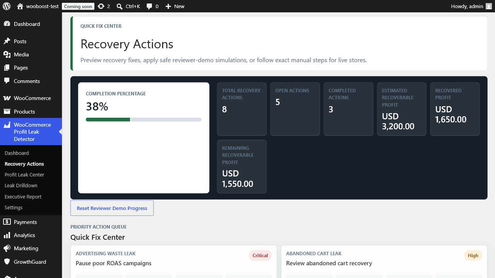
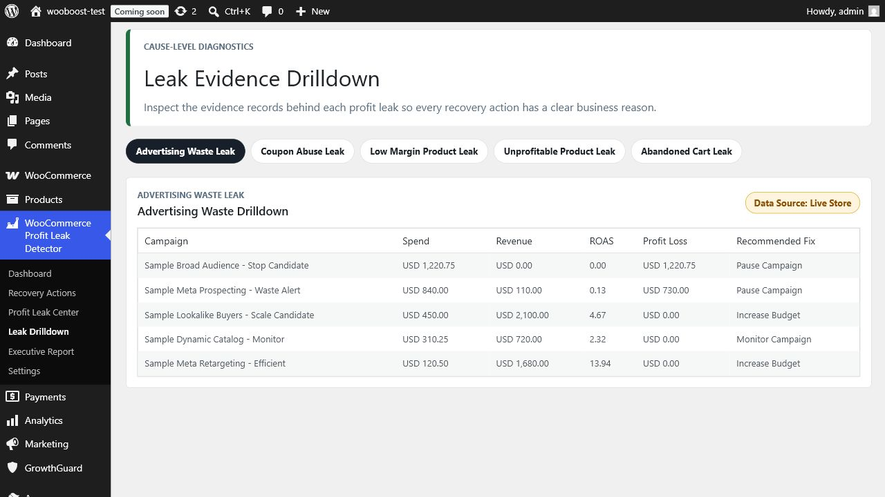
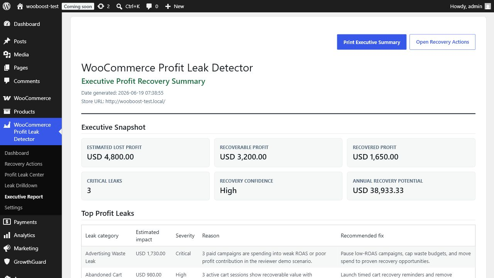

Command Center
Dashboard that answers the money question first.
Estimated lost profit, recoverable profit, recovery score, funnel, and revenue impact are visible immediately from the real WordPress admin interface.

Recovery Actions
Action cards, not passive analytics.
Each action shows priority, expected recovery, confidence, evidence access, and safe simulation workflow so store owners know what to fix next.
Leak Evidence
Drill into the proof behind each profit leak.
Advertising waste, abandoned carts, coupon abuse, low-margin products, and weak product performance are backed by real evidence tables.


Executive Reporting
Share recovery priorities with decision makers.
Executive summaries translate store leaks into business language for owners, clients, and stakeholders.
Built for CodeCanyon buyers
A real WooCommerce admin product showcase.
This demo uses only captured WordPress plugin screenshots stored locally in the GitHub Pages demo folder.